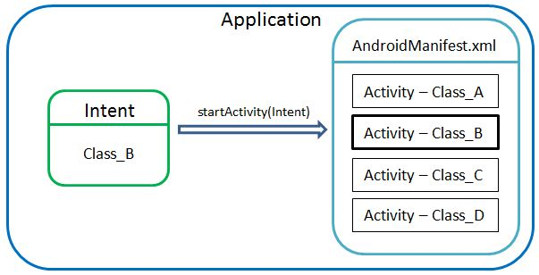
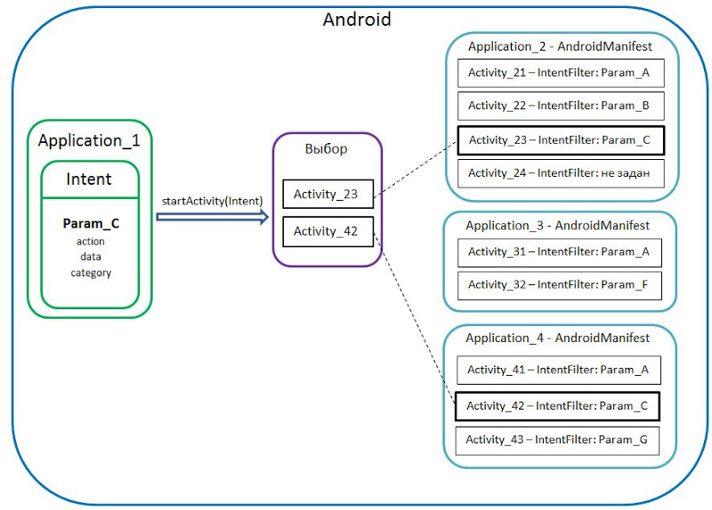

В этом уроке:
- разбираемся в коде урока 21
- теория по Intent и Intent Filter
- немного о Context
На прошлом уроке (№ 21) мы создали приложение, которое содержит два Activity. Напомню, что для создания Activity, необходимо:
- создать класс, с суперклассом android.app.Activity
- создать Activity-запись в манифесте и указать ей созданный класс в поле Name
Надеюсь прошлый урок не вызвал особых трудностей и процедура создания Activity примерно уложилась в голове. Теперь мы можем обратить внимание на код вызова Activity.
Intent intent = new Intent(this, ActivityTwo.class);
startActivity(intent);Мы использовали объект Intent. О нем можно почитать здесь, здесь и здесь. Правда инфа достаточно сложна для понимания с нуля. Я попробую своими словами объяснить.
Что такое Intent
В нашем случае Intent – это объект, в котором мы прописываем, какое Activity нам необходимо вызвать. После чего мы передаем этот Intent-объект методу startActivity, который находит соответствующее Activity и показывает его. При создании Intent мы использовали конструктор Intent (Context packageContext, Class cls) с двумя параметрами.
Первый параметр – это Context. Если помните, когда мы программно создавали View в одном из прошлых уроков, мы тоже использовали в конструкторах объект Context. Activity является подклассом Context, поэтому мы можем использовать ее – this. Вкратце, Context – это объект, который предоставляет доступ к базовым функциям приложения таким как: доступ к ресурсам, к файловой системе, вызов Activiy и т.д. Я думаю, в дальнейшем мы рассмотрим примеры, где явно увидим, зачем Context передается и как используется.
Второй параметр – имя класса. Напомню, что при создании записи Activity в манифест-файле мы указываем имя класса. И теперь если мы укажем тот же класс в Intent – то система, просмотрев манифест-файл обнаружит соответствие и покажет соответствующий Activity.
В этом можно легко убедится. Мы удалим запись об Activity из манифест-файла и попробуем его после этого вызвать. Откройте проект из прошлого урока P0211_TwoActivity, откройте манифест-файл, вкладка Application и удалите запись об ActivityTwo с помощью кнопки Remove. Сохраните все, запустите приложение и попробуйте вызвать Activity кнопкой “Go to Activity Two”. Приложение выдаст ошибку. Если посмотреть логи, то видим следующий текст:
ERROR/AndroidRuntime(367): android.content.ActivityNotFoundException: Unable to find explicit activity class {ru.startandroid.develop.p0211twoactivity/ru.startandroid.develop.p0211twoactivity.ActivityTwo}; have you declared this activity in your AndroidManifest.xml?
(Логи - вкладка LogCat в Eclipse. Если не видно такой, то идем в меню Window -> Show View -> Other, папка Android -> LogCat )
Система говорит нам, что не нашла такого Activity класса и любезно подсказывает, что, возможно, он не прописан в манифест-файле. Снова пропишите Activity в манифест-файле, все сохраните и запускайте. Теперь должно работать.
Явный вызов
Вызов Activity с помощью такого Intent – это явный вызов. Т.е. с помощью класса мы явно указываем какое Activity хотели бы увидеть. Это обычно используется внутри одного приложения. Схематично это можно изобразить так:

Здесь мы создаем Intent, в качестве параметра передаем ему класс Class_B. Далее вызываем метод startActivity с созданным Intent в качестве параметра. Метод проверяет AndroidManifest на наличие Activity связанной с классом Class_B и если находит, то отображает. Все это в пределах одного приложения.
Неявный вызов
Существует также неявный вызов Activity. Он отличается тем, что при создании Intent мы используем не класс, а заполняем параметры action, data, category определенными значениями. Комбинация этих значений определяют цель, которую мы хотим достичь. Например: отправка письма, открытие гиперссылки, редактирование текста, просмотр картинки, звонок по определенному номеру и т.д. В свою очередь для Activity мы прописываем Intent Filter - это набор тех же параметров: action, data, category (но значения уже свои - зависят от того, что умеет делать Activity). И если параметры нашего Intent совпадают с условиями этого фильтра, то Activity вызывается. Но при этом поиск уже идет по всем Activity всех приложений в системе. Если находится несколько, то система предоставляет вам выбор, какой именно программой вы хотите воспользоваться. Схематично это можно изобразить так:

В Application_1 создается Intent, заполняются параметры action, data, category. Для удобства, получившийся набор параметров назовем Param_C. С помощью startActivity этот Intent отправляется на поиски подходящей Activity, которая сможет выполнить то, что нам нужно (т.е. то, что определено с помощью Param_C). В системе есть разные приложения, и в каждом из них несколько Activity. Для некоторых Activity определен Intent Filter (наборы Param_A, Param_B и т.д.), для некоторых нет. Метод startActivity сверяет набор параметров Intent и наборы параметров Intent Filter для каждой Activity. Если наборы совпадают (Param_C для обоих), то Activity считается подходящей.
Если в итоге нашлась только одна Activity – она и отображается. Если же нашлось несколько подходящих Activity, то пользователю выводится список, где он может сам выбрать какое приложение ему использовать.
Например, если в системе установлено несколько музыкальных плееров, и вы запускаете mp3, то система выведет вам список Activity, которые умеют играть музыку и попросит выбрать, какое из них использовать. А те Activity, которые умеют редактить текст, показывать картинки, звонить и т.п. будут проигнорированы.
Если для Activity не задан Intent Filter (Activity_24 на схеме), то Intent с параметрами ему никак не подойдет, и оно тоже будет проигнорировано.
Если проводить аналогии - можно сравнить Intent с ключом, а Intent Filter с замкОм, за которым сидит прекрасное Activity )))
Мы будем постепенно узнавать нюансы этого механизма и значения которыми заполняются параметры action, data и category в Intent и Intent Filter. Сейчас важно понять, что в случае неявного вызова одно приложение посылает Intent, а все другие сверяют его параметры со своими Activity -> Intent Filter. Intent – это базовое понятие системы Android и без него нам никуда. Оно применяется не только для Activity. Но об этом позднее.
Ну вот, хотел написать пару вводных слов, а получилось достаточно подробное объяснение со схемами и примерами ) Надеюсь, что у меня получилось донести смысл технологии Intent-ов. В дальнейшем будем практиковаться и закрепим тему.